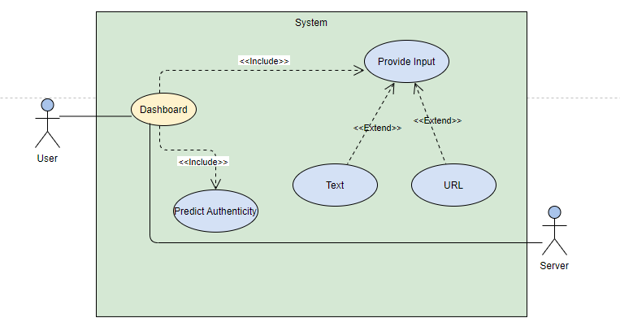
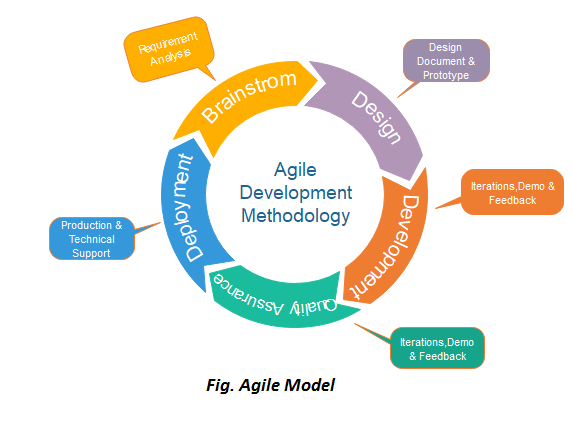
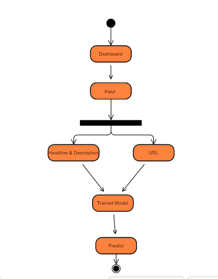
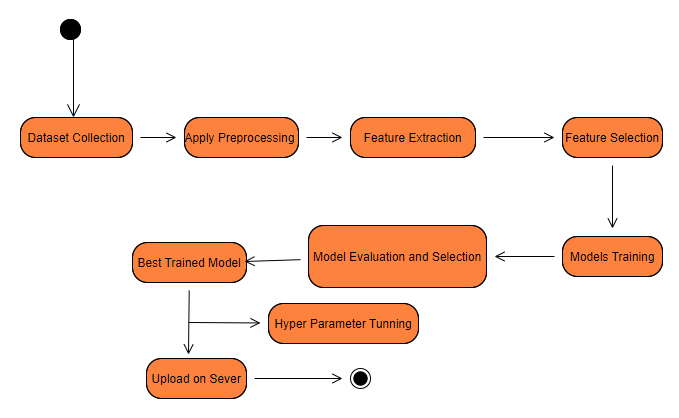
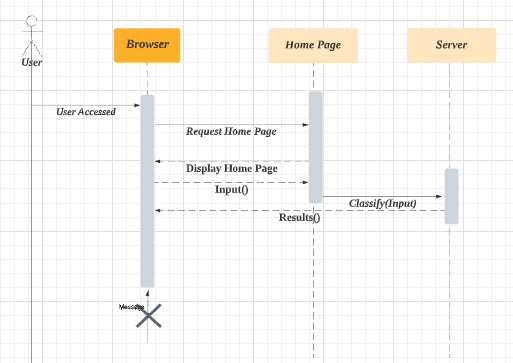
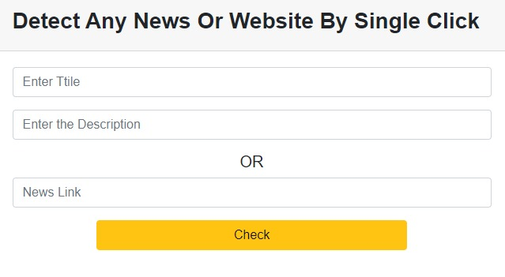
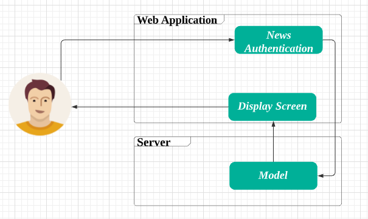
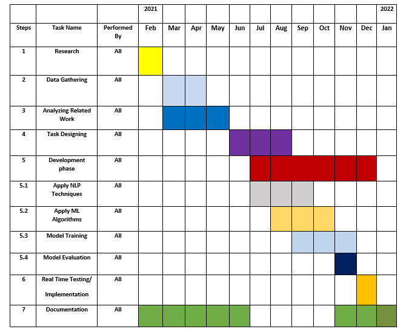
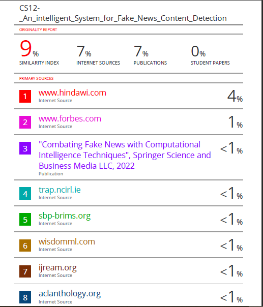

CS-12 An Intelligent System for Fake News Content Detection
Final Year Project – Final Report
Session 2018-2022
A project submitted in partial fulfilment of the
COMSATS University Islamabad, Lahore Campus
Degree
of
BS in Computer Science (CUI)
Department of Computer Science
COMSATS University Islamabad, Lahore Campus
31 December 2021
Project Detail
Type (Nature of project) | [] Development [] Research [√] R&D | ||||
Area of specialization | |||||
Project Group Members | |||||
Sr.# | Reg. # | Student Name | Email ID | *Signature | |
(i) | SP18-BCS-069 | ABUHURARAH | SP18-BCS-069 @cuilahore.edu.pk |
| |
(ii) | SP18-BCS-137 | HAFIZ HAMZA AHMAD | SP18-BCS-137 @cuilahore.edu.pk | ||
*The candidates confirm that the work submitted is their own and appropriate credit has been given where reference has been made to work of others
Plagiarism Free Certificate
This is to certify that, I am ABUHURARAH S/D/o JAMIL AKHTAR, group leader of FYP under registration no
CIIT/SP18-BCS-069/LHR at Computer Science Department, COMSATS Institute of Information Technology, Lahore. I declare that my FYP proposal is checked by my supervisor and the similarity index is 09% that is less than 20%, an acceptable limit by HEC. Report is attached herewith as Appendix A.
Date: ___31/12/20____ Name of Group Leader: ABUHURARAH Signature:
Name of Supervisor: Ms. Kanza Hamid Co-Supervisor (if any): Ms. Sheeza Zaheer
Designation Lecturer Designation: ____Lecturer _______
Signature: _____________________ Signature: _____________________
HoD: _____________________ Signature: _____________________
Abstract
The explosive growth of Fake News Content on internet is a growing problem in the world. The aim behind spreading fake news content is to sway opinion of the vast majority of people who use digital media to damage politics, economy and trust in news ecosystem. So, the main purpose of our system is to provide a platform to news article readers where they can find out that how much content written in the article is authentic. The project is a web-based application which can automatically detect the authenticity of news content using Artificial Intelligence, Machine Learning and NLP techniques.
In our project user can input the text of the articles by URL of the news articles directly or by writing text of news articles manually. This web app uses a trained model that’s hosted on local server at the backend. The trained model uses machine learning techniques to help us in predicting the authenticity of news articles correctly. The model is trained on a relevant dataset in order to achieve the accuracy. This will help people in deciding whether to consider the news articles are reliable or not. This will enable users to make decisions while having correct information obtained from reliable news articles.
Acknowledgement
Thanks to Allah Almighty who gave us the power and the courage to compete this project and it would be unfair and unkind not to acknowledge the guidance, intelligence and patience Ms. Kanza Hamid has shared with us while working on this project. We are incredibly grateful to our supervisor for her vision and her persistence upon the values of hard work, helping others and not losing morale. We would also like to thank our Co-Supervisor Ms. Sheeza Zaheer for her contributions.
It’s been a beautiful journey and we couldn’t have wished for anything more than what we got.
We would also like to thank our university, Comsats University Islamabad, Lahore Campus, for providing us all the facilities we required. This would not have been possible without it.
Our heartiest gratitude to Ms. Kanza Hamid, class-fellows and everybody who helped us in anyway with their thoughts, skills or any productive way.
Table of Contents
1.4 Assumptions and constraints 11
2.1.1 A simple but tough-to-beat baseline for the Fake News Challenge stance detection task 12
2.1.2 Detection of Online Fake News Using N-Gram Analysis and Machine Learning Techniques 12
2.1.3 Fake news detection using naive Bayes classifier 13
2.1.4 Automated Fake News Detection Using Linguistic Analysis and Machine Learning 13
2.2.3 Any private organization or students 14
2.3 Requirements elicitation 14
2.3.1 Functional Requirements 14
2.3.2 Non-functional requirements 15
2.4 Use case descriptions and designs 16
2.5 Software development life cycle model 17
Justification for using this Model: 18
3.1 Work breakdown structure 19
3.2.1 User Activity Diagram: 20
3.2.2 System Training Activity Diagram 21
3.3.1 User Sequence diagram 21
3.4 High Fidelity Diagrams of the System 22
3.6 Network Diagram (Gantt chart) 24
4.1.1 News Articles as an Input 25
4.1.2 News Article Authenticity Prediction 26
5.1.2 Handling Imbalanced Data 30
5.1.3 Extraction and Selection of Features 30
List of Tables
Table 1 FR01 – Getting Input 15
Table 2 FR02 – Extracting text from URL 15
Table 3 FR03 – Predicting the Authenticity 15
Table 4 FR04 – Showing Prediction 15
Table 5 NFR01 - User Friendly 16
Table 6 NFR02 - Compatibility 16
Table 7 NFR03 - Portability 16
Table 8 NFR04 - Responsive and fast 16
Table 11 Getting Input Test Case 29
Table 12 Predicting the Result Test Case 30
Table 13 Showing results to User on website 31
List of Figures
Figure 1 Use case: User Side 17
Figure 2: SDLC-Agile Development Model 17
Figure 3 Work Breakdown Structure Diagram 19
Figure 5 System Training Activity 20
Figure 6 User Sequence Diagram 20
Figure 7 Website Homepage Section 21
Figure 8 Website Prediction Section 21
Figure 9 Software Architecture 22
CHAPTER #1 INTRODUCTION
1 Introduction
1.1 Introduction
The concept of spreading false news content among people is not a new concept for society. In the past publishers used to publish false and misleading news articles for many uses. One of those uses was the opinion building of people towards a specific topic. But after the advent of the Internet, it became easier to access a variety of data not only on traditional media but also on digital media. However, it came with huge disadvantages such as loss of credible news content because in digital media platforms it is very easy to manipulate news articles. In these days people usually get information from social media platforms such as Facebook, Twitter and blogs. Since there is no filter present on these platforms which can check the authenticity of the information which is being shared on them. Most of the times the news articles contain false information mixed with true information. This happens to affect the credibility of these social platforms.
According to research “By 2022, most people in mature economies will consume more false information than true information”.[5] So, it is quite necessary to have an efficient system that can detect news content which includes false information. There is not an efficient system available which can authenticate news articles on the basis of how much true or false information present in articles. That’s why the fundamental capacity of our system is that it will allow users to overcome the difficulty of finding how much true or false information is present in news articles.
Our intelligent system predicts the authenticity of news articles efficiently by exploring the field of NLP (natural language processing), which tells us that how a machine can understand human-to-human communication and how machines analyze textual information. In NLP different algorithms are used which helps in identifying and extracting the rules of languages to make the machines enable to understand the text. After that whenever the text will be provided to the machine it will use ML algorithms to obtain the important information from them and also to extract meaning associated with every sentence. After using the NLP techniques, we used Traditional Machine Learning models to train our system to classify the news article into different categories. Our system will predict the authenticity of the news articles into these categories:
True
Mostly-True
Half-True
False
Mostly-False
Pants-on-Fire
1.2 Objectives
To make an effective system for users to check news articles authenticity more efficiently and easily accessible.
To develop such an application that will automate the function of finding the authenticity of the news articles available on internet.
To help news websites editors to validate the content written in the articles before publishing it.
To maintain the authenticity balance of the news ecosystem.
To create a system that can be used in running news websites to authenticate the news articles.
1.3 Problem Statement
This system is a web-based application that predicts the authenticity level of the news articles. It is developed to make the entire process of finding the authenticity of the news articles easier, efficient and accessible. Because in these days it is very difficult for the public to get authentic news content from the internet. News articles having false information mixed with true is dangerous for people. This may also affect the trust of the public in digital media. So, the main problem is to check the authenticity of the articles which can now be possible by just providing text or URL of news article through our application
1.4 Assumptions and constraints
The assumptions and constraints of the system are as follows:
1.4.1 Assumptions
- The user must have a phone or laptop for the use of this application.
- The user must have an internet connection to use our system (application or website).
- The user must provide input news in the form of URL or text.
1.4.2 Constraints
- Our application will only be applicable on news articles written only in English only.
- Our system is based on the stance detection so it will not perform well when article’s body is plain and emotionless.
- Our system will work only if the description of the news article has 100 words in it.
1.5 Project Scope
The spread of false information through news articles is a serious problem around the globe. Moreover, there is not an efficient system available which can help people to overcome this issue. We developed an intelligent system which can help people to authenticate the news articles. Users only have to enter the text of the news content (headline and description) or URL then our system will classify the user input into different categories. This system can also be used by news editors of different news websites. It can help them to check the credibility of the news article writers. Moreover, this system can be used in news applications in order to show the percentage of the authenticity of the news.
CHAPTER #2 REQUIREMENT ANALYSIS
2 Requirement Analysis
2.1 Literature Review
There are a few research papers available on the internet which are relevant to our project. Here are some related works from around the globe:
2.1.1 A simple but tough-to-beat baseline for the Fake News Challenge stance detection task
A system for fake news detection is proposed by Riedel et al. in which a stance detection system. In this system four labels (agree, disagree, discuss, or unrelated) are used depending upon the level of conformity of article headline with article text one of the mentioned labels is assigned to the article. The dataset used to train model contains articles with a headline, body, and label. The linguistic properties of text such as term frequency (TF) and term frequency-inverse document frequency (TF-IDF) are used as a feature set while a multilayer perceptron (MLP) classifier is used with one hidden layer along with a SoftMax function on the output of the final layer. The authors are able to achieve tan overall accuracy of 88.46% just by using a simple MLP with some fine-tuned hyperparameters to achieve.[1]
2.1.2 Detection of Online Fake News Using N-Gram Analysis and Machine Learning Techniques
The study by Ahmed et al. includes extraction of linguistic features such as n-grams from textual articles. There are multiple Machine learning models including K-nearest neighbor (KNN), support vector machine (SVM), logistic regression (LR), linear support vector machine (LSVM), decision tree (DT), and stochastic gradient descent (SGD) are used to train the system out of them SVM and logistic regression achieved highest accuracies of 92%. This research shows that the accuracy of the model depends upon the number of the n-grams calculated for a particular article because with the number of increased in n-grams the overall accuracy of the model decreased. [2]
2.1.3 Fake news detection using naive Bayes classifier
In this this the authors used a simple approach for fake news detection using naïve Bayes classifier. In this approach authors achieved the accuracy of approximately 74% on test data which can be considered as a decent outcome keeping in mind that they only use a simple approach of supervised learning using a single ML algorithm. They trained their model using a dataset collected from Facebook posts. However, this system’s accuracy can be increased in many ways as described in this article one of them its accuracy can be increased by selecting more feature vectors and so on. Basically, in this study the authors were trying to prove that the problem of fake news detection can be easily solved by using Artificial intelligence. [3]
2.1.4 Automated Fake News Detection Using Linguistic Analysis and Machine Learning
In this study authors have developed an automated fake new detection system by using Machine Learning on the basis of Linguistic features. First of all, they have collected dataset from Kaggle which were labelled as fake or biased and also created their own labelled dataset of 345 news content collected from different sources. After combining them they split their data into training and testing dataset by 80-20 ratio then they trained multiple machine learning models are used such as logistic regression, support vector machine, random forest, decision tree, k-neighbors classifier etc. and evaluated them on the basis of their accuracies achieved. Among these algorithms. Support Vector Machine method outperformed remaining models by achieving the highest accuracy score of 87%. [4]
2.2 Stake Holders
The stakeholders list of our system is as follows:
2.2.1 Admin
The admin will be the top-level manager who will manage the whole system, any issues and the data that comes in and goes out.
2.2.2 Users
The system will help users to predict the Authenticity of the articles using text given manually and through URL.
2.2.3 Any private organization or students
Lastly, any other organizations, students or researchers who want to use our application and data for further research and studying can benefit from our system.
2.3 Requirements elicitation
The requirements of the system from the stakeholders’ point of view are as follows:
2.3.1 Functional Requirements
The functional requirements of the system are mentioned below:
2.3.1.1 FR01 – Getting the Input
FR01 | The application will take the input in the form of URL or text of the news articles. |
2.3.1.2 FR02 – Extracting text from URL
Table 2 FR02 – Extracting text from URL
FR02 | The URL given by the user as an input is used to extract the text of the news article. Using the trained model embedded at the backend server, the web sends the text to the server and the news article authenticity is predicted. |
2.3.1.3 FR03 – Predicting the Authenticity of News Articles
Table 3 FR03 – Predicting the Authenticity
FR03 | The text given by user or extracted from URL is provided to trained model to classify the news article into different categories showing the authenticity of the news article. |
2.3.1.4 FR04 – Showing the Prediction to the User
Table 4 FR04 – Showing Prediction
FR04 | The prediction given by the trained model for the given input will be shown to the user on the screen. |
2.3.2 Non-functional requirements
2.3.2.1 NFR01 – User Friendly
NFR 01 | The user interface of the website should be very easy to learn and use. |
Table 5 shows that our system will be user friendly and very easy to understand.
2.3.2.2 NFR02 – Availability
NFR 02 | System should operate properly every time it is required for use. |
Table 6 shows that our web will be available to users anytime even in case of repair.
2.3.2.3 NFR03 – Portability
NFR 03 | The application will be usable on any device like mobiles and Pcs. |
Table 7 shows that our app will be usable on any device which has an internet connection
2.3.2.4 NFR04 – Responsive and fast
Table 8 NFR04 - Responsive and fast
NFR 05 | The prediction of the News Authenticity will be done within seconds. The application will be quick to generate results. |
Table 8 shows that our web will be highly responsive and quick to generate results as well as showing them to the user. There’ll be no unnecessary waiting.
2.3.2.5 NFR05 – Accuracy
NFR 06 | The application will generate results that will be reasonably accurate. |
Table 9 shows that our web will generate results that are accurate up to a very good percentage so that the user can trust the results.
2.4 Use case descriptions and designs
2.4.1 User Side
Use case ID: 01 |
Use case name: News Articles Authenticity Predictor |
Actors: User, Server |
Use Case Summary: The news article authenticity is determined by the user’s input given in the form of URL or text. The trained model will use this input to predict the authenticity and it will be displayed on the screen to the user. |
Pre-condition: Must have internet connection, the text of the articles must have more than 100 words in it. |
Course of events: The user provides URL or text; the website will send the text to the server and the server will send predicted result from the text as an output. This predicted Authenticity will be displayed on screen. |
Post condition: Authenticity is predicted by the model and displayed on the screen. |
Includes: Take input, and predict the Authenticity of news articles. |
Table 10 shows us that the use case “News article Authenticity Predictor app” with the use case ID “01” explains the workflow of the web application side of the project. This application side is the one that the user is going to deal with. There are two actors in this use case, the user and the server. The user performs majority of the tasks here including providing input. Then the input is run through the web app to the model which then predicts the authenticity and shows it back to the user on the screen.
2.4.2 Design

2.5 Software development life cycle model
The SDLC process model we have opted for in our project is Agile Model. In this method a task is simply divided into many smaller parts and these parts do not directly involve long-term planning which allows us to minimize the project risk and also reduces the delivery time of the system. It is basically combination of Iterative and Incremental Model. [6]

Figure 2: SDLC-Agile Development Model
Planning: In planning phase we analyze what we need to do. We gather rough data about our project that which items are done in which sprint. This helps us to learn how and what we can achieve with respect to our project.
Requirement Analysis: We gather our requirements in this phase. We identify projects needs and evaluate a system for feasibility. Further we check in detail that what is needed for this particular project.
Designing: In this design process we divide the requirements and functionality into small parts and start working on them as this helps us to make faster designs and get quick feedbacks.
Building: In this building phase we take code requirements outlined before and we use them to build the actual product/software.
Testing: In this testing phase we find out if our code is working according to the plan. Due to this we are able to find the failures and correct them accordingly.
Justification for using this Model:
In this model, we started with initial planning then after many cyclic iterations end with deployment. This model mainly was focused on customer requirements and needs. We followed iterative model in our project because it was more flexible and makes easier to detect bugs or errors and to change them earlier. During iteration, different requirements are developed and deployed. After each iteration, the module was integrated with the previous module. After 4 complete iterations, the project was completed. We used Agile as we had time constraint as a major factor.
CHAPTER #3 SYSTEM DESIGN
3 System Design
Chapter 3 shows all the designs that were created of this project:
3.1 Work breakdown structure
The work breakdown structure is as follows:
Read the diagram as text
- Research
- Research Existing Solution
- Requirement Gathering
- Research on Algorithms
- Design
- Low Fidelity Diagrams
- High Fidelity Diagrams
- Use Case Diagrams
- Sequence Diagrams
- Activity Diagrams
- Implementation
- Train Text Based Model
- Front End
- Back End
- Integrating Front and Back End
- Deploying
- Integrate Back End & Front End
- Testing
- Unit Testing
- Integration Testing
- System Testing
- Acceptance Testing
- Deployment
- User Manual
- Marketing
Figure 3 Work Breakdown Structure Diagram
3.2 Activity Diagram
Activity diagrams explains the whole working of the system.
3.2.1 User Activity Diagram:

3.2.2 System Training Activity Diagram

Figure 5 System Training Activity
3.3 Sequence diagram
3.3.1 User Sequence diagram

Figure 6 User Sequence Diagram
3.4 High Fidelity Diagrams of the System
The high-fidelity diagrams of the whole project are as follows:
3.4.1 Website
3.4.1.1 Home Section of website
Figure 7 Website Homepage Section
Figures 19 show the home section of the initial website designed for the project.
3.4.1.2 Prediction Section

Figure 8 Website Prediction Section
3.5 Software Architecture
The following diagram, Figure 26 displays the software architecture that is used in our system.

Figure 9 Software Architecture
3.6 Network Diagram (Gantt chart)

CHAPTER #4 TESTING
4 Testing
4.1.1 News Articles as an Input
Table 11 Test Case- Getting Input
Test Case ID: TC-01 | |
Application Name: | News Authenticity Predictor |
Use Case(s): | Getting news article input using the website |
Input summary: | On our website, the user can provide input by URL or text. Then the user clicks on “Check Authenticity” to predict. The website starts processing the input. |
Output summary:
Success:
The website starts processing. | |
Pre-conditions:
User must have a working internet connection. User must have a device on which the website can be opened in a supported browser. | |
Post-conditions:
News Authenticity prediction process has started. | |
Table 15 describes how the user can provide input to predict News Authenticity. It can be any news articles URL or Text.
4.1.2 News Article Authenticity Prediction
Table 12 Test Case- Predicting the Result
Test Case ID: TC-02 | |
Application Name: | News Authenticity Predictor |
Use Case(s): | News Authenticity Prediction using the website |
Input summary: | After user has provided the input through the option on website, the application will process the input and provide News Authenticity Prediction and resultant page. |
Output summary:
Success:
News Authenticity has been predicted. | |
Pre-conditions:
User must have a working internet connection. User must have a device with a supported internet browser. | |
Post-conditions:
News Authenticity Prediction will be predicted and shown on the screen. | |
Table 16 describes how News Authenticity is predicted on our website.
4.1.3. Showing results to the user on website
Table 13 Showing results to User on website
Test Case ID: TC-06 | |
Application Name: | News Authenticity Predictor |
Use Case(s): | Showing results to user on website |
Input summary: | After user has done his part, the application processes the input and shows the user the results. |
Output summary:
Success:
News Authenticity has been predicted and shown to the user on the web page in a neat, understandable manner. | |
Pre-conditions:
News Authenticity has been predicted. | |
Post-conditions:
The user can view the results. | |
Table 18 describes how the user sees the results from the website after it processes the input.
CHAPTER #5 CONCLUSION
5 Conclusion
5.1 Problems faced
During the course of the entire project, we faced a lot of problems. We have discussed the problems and their possible solutions below.
5.1.1 Dataset Collection
Today, the fields of Machine Learning and Data Science are far more advanced and successful than other fields of Computer Sciences. The major reason behind the success of this field is the growth of the value of data. Data could be said to be the pillar upon which this field is built. Because machines don’t sense and think like humans, they require data to learn, operate, and perform any actions. Hence, our first requirement for the project was data.
Collecting the dataset was incredibly difficult as we needed a dataset which has news articles along with their labeled categories. There are a lot of news articles data available with two labelled categories Real and Fake but we require dataset which is labelled in more than two categories. We want to obtain a data which can help us to find authenticity of news articles easily. After quite research we find out that there is a website named Politifact.com where we can find desired dataset. So, we have to write a Web Scrapper. That helps us to get our desired dataset. The dataset we obtained have 6 different classes
(1) True (2) False (3) Half True (4) Mostly True (5) Mostly False (6) Pants on Fire
So, we concatenate data obtained from web scrapping with data found from other data repositories i.e., Kaggle and GitHub.
5.1.2 Handling Imbalanced Data
The dataset we obtained from concatenating the data obtained from Kaggle and web scrapping was highly imbalanced because the two classes of True and False has total instances of 20K while other four categories contain only about 10k instances. Since we are performing Classification and the machine learning algorithms used for classification usually perform well on balanced data. So, in order to get best performance of the Machine Learning algorithms we used following techniques:
Balanced Weight Change
Manual Weight Change
Over Sampling
Under Sampling
SMOTE Tomek
5.1.3 Extraction and Selection of Features
The next problem we faced was how to extract and select features which can help us to achieve maximum accuracy of training models using Machine Learning Algorithms. In order to convert our dataset into vector form we have to find out that which vectorization technique will perform best. We used TF-IDF and Count Vectorization techniques to do so. We have also used different ngram_ranges like unigram (1,1), Bigram (2,2) and (1,2) After feature extraction we have another problem which is to select best features which are best for training. In order to do so we have used SelectKBest method along with chi2 while limiting the features number up to 100.
After that we applied transfer learning techniques on our model, and then we trained the mode. The results were good enough to go ahead and we deployed this model.
5.1.4 Model deployment
The last problem we faced while we are trying to deploy our trained model. In order to do so we have created a server and established it by using Flask framework. We also have to create a website and connect it with server where our trained model is present.
5.2 Project summary
In conclusion, our project, News Articles Authenticity Predictor, consists of a website. The website will use Machine Learning model that will help in predicting the authenticity of news articles. The data collected through the user input will populate our dataset which can later be used for further purposes.
5.3 Future work
The future work for our application is concerned with gathering more data as time passes because we know that as we increase the size of dataset for ML model training there will be more chances that our trained system will work better. So, we will try to collect more dataset to train our system in order to achieve maximum accuracy for our system.
Currently this system will only be working on English news datasets but in future we will be adding Urdu datasets. As we know gathering data and creating bag of words for a language requires a lot of man power and that was a disadvantage at our hand, as we are only 2 people. But in future, if this project is to be commercialized, making this corpus and bag of words can be a possible.
CHAPTER #6 REFERENCES
6 References
[1] https://arxiv.org/pdf/1707.03264.pdf
[2] Ahmed H., Traore I., Saad S. (2017) Detection of Online Fake News Using N-Gram Analysis and Machine Learning Techniques. In: Traore I., Woungang I., Awad A. (eds) Intelligent, Secure, and Dependable Systems in Distributed and Cloud Environments. ISDDC 2017. Lecture Notes in Computer Science, vol 10618. Springer, Cham.
https://doi.org/10.1007/978-3-319-69155-8_9
[3] M. Granik and V. Mesyura, "Fake news detection using naive Bayes classifier," 2017 IEEE First Ukraine Conference on Electrical and Computer Engineering (UKRCON), 2017, pp. 900-903, Doi: 10.1109/UKRCON.2017.8100379.
https://ieeexplore.ieee.org/abstract/document/8100379
[4] Singh, Vivek & Dasgupta, Rupanjal & Sonagra, Darshan & Raman, Karthik & Ghosh, Isha. (2017). Automated Fake News Detection Using Linguistic Analysis and Machine Learning. 10.13140/RG.2.2.16825.67687.
[6] https://www.apm.org.uk/resources/find-a-resource/agile-project-management/
Appendix A
1st page of Turnitin Report
